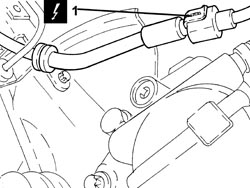
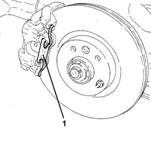
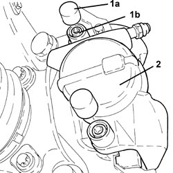
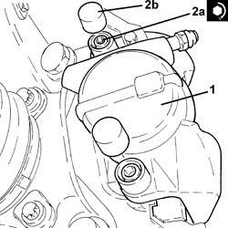

3310A30 FRONT BRAKE CALIPER (ONE) - R.R
- Path
- Procedures > 33 BRAKES > 3310 DISC BRAKES > 3310A FRONT DISC BRAKES > 3310A30 FRONT BRAKE CALIPER (ONE) - R.R
- Kind
- repair procedure (removal / refitting; the operation number is the code)
- Applies to
- all engines; all production periods
- Interactive page
- https://sloeber94.github.io/elrnDB-aBrrSpdr/en/#/946002114
Applies to: engines: 2.2 JTS; all production periods
 Removing
Removing
 Refitting
Refitting- Position the vehicle on a lift.
- Make sure that the ignition key is in the OFF position, then disconnect the battery terminal (-).
Description | Connector | |
|---|---|---|
- | Battery |
Op. 4450B02 LEFT FRONT WHEEL - R.R
Op. 7055B90 LEFT FRONT WHEEL ARCH LINER - R.R.
Op. 3340B10 HOSE TO L/H OR R/H FRONT BRAKES (ONE) - R+R
1. Disconnect the electrical connection for the brake pad wear sensor.
Description | Connector | |
|---|---|---|
1 | Left brake pad wear sensor (switch) |

Applies to: engines: 2.2 JTS; all production periods
1. Remove the brake caliper traction spring.

Applies to: engines: 2.2 JTS; all production periods
1. Remove the plugs (1a) and undo the brake caliper fixing bolts (1b).
2. Remove the brake caliper complete with pads.

Applies to: engines: 2.2 JTS; all production periods
- Working at the bench, remove the brake pads from the caliper.
Applies to: engines: 2.2 JTS; all production periods
Refitting
Removing- Place the brake pads in their housings on the brake caliper.
1. Refit the brake caliper with pads.
2. Tighten the bolts (2a) fixing the brake caliper to the recommended torque and fit the plugs (2b).
Component | Fastening | dia | Value (daNm) | Validity |
|---|---|---|---|---|
Front brake callipers | Bolt | M8 | 2.5 ÷ 3.0 | 1.8 1.9 JTS 2.2 JTS 1.9 JTD 8V 1.9 JTD 16V |

Applies to: engines: 2.2 JTS; all production periods
- Refit the brake caliper traction spring in its seat.
- Connect the electrical connection for the brake pad wear sensor.
Op. 3340B10 HOSE TO L/H OR R/H FRONT BRAKES (ONE) - R+R
Op. 7055B90 LEFT FRONT WHEEL ARCH LINER - R.R.
Op. 4450B02 LEFT FRONT WHEEL - R.R
- Connect the negative battery terminal.
Op. 0010T64 BRAKE AND/OR CLUTCH FLUID CHECK LEVEL AND TOP UP AS NECESSARY
Op. 0010T65 HYDRAULIC BRAKE SYSTEM - BLEED AIR
- Remove the vehicle from the lift.
Applies to: engines: 2.4 JTD 20v, 3.2 JTS; all production periods
Removing
Refitting- Position the vehicle on a lift.
- Make sure that the ignition key is in the OFF position, then disconnect the battery terminal (-).
Op. 4450B02 LEFT FRONT WHEEL - R.R
Op. 7055B90 LEFT FRONT WHEEL ARCH LINER - R.R.
Op. 3340B10 HOSE TO L/H OR R/H FRONT BRAKES (ONE) - R+R
1. Disconnect the electrical connection for the brake pad wear sensor.
Description | Connector | |
|---|---|---|
1 | Left brake pad wear sensor (switch) |
2. Undo the bolts (2a) and remove the front brake caliper assembly (2b) with pads.

Applies to: engines: 2.4 JTD 20v, 3.2 JTS; all production periods
- Working at the bench, remove the brake pads from the caliper.
Applies to: engines: 2.4 JTD 20v, 3.2 JTS; all production periods
Refitting
Removing- Place the brake pads in their housings on the brake caliper.
- Position the rear brake caliper in its housing and secure it tightening the bolts to the recommended torque.
Component | Fastening | dia | Value (daNm) | Validity |
|---|---|---|---|---|
Front brake callipers | Bolt | M8 | 2.5 ÷ 3.0 | 2.2 JTS 3.2 JTS |
- Connect the electrical connection for the brake pad wear sensor.
Op. 3340B10 HOSE TO L/H OR R/H FRONT BRAKES (ONE) - R+R
Op. 7055B90 LEFT FRONT WHEEL ARCH LINER - R.R.
Op. 4450B02 LEFT FRONT WHEEL - R.R
Op. 0010T64 BRAKE AND/OR CLUTCH FLUID CHECK LEVEL AND TOP UP AS NECESSARY
Op. 0010T65 HYDRAULIC BRAKE SYSTEM - BLEED AIR
- Connect the negative battery terminal.
- Remove the vehicle from the lift.
Topics linked from this page (7)
- 0010T64 BRAKE AND/OR CLUTCH FLUID CHECK LEVEL AND TOP UP AS NECESSARY
- 0010T65 HYDRAULIC BRAKE SYSTEM - BLEED AIR
- 3340B10 HOSE TO L/H OR R/H FRONT BRAKES (ONE) - R+R
- 4450B02 LEFT FRONT WHEEL - R.R
- 7055B90 LEFT FRONT WHEEL ARCH LINER - R.R.
- A001 BATTERY
- K020 LEFT BRAKE PAD WEAR SENSOR (SWITCH)